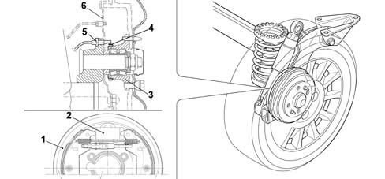

3310B REAR DISC BRAKES
- Path
- Descriptions > 33 BRAKING SYSTEM > 3310 DISC BRAKES > 3310B REAR DISC BRAKES
- Kind
- system description
- Applies to
- all engines; all production periods
- Interactive page
- https://sloeber94.github.io/elrnDB-lYpsln/en/#/2427418
Applies to: all engines; all production periods
The rear braking system:
- is equipped with drum brakes with a 19 mm cylinder and 203 mm shoes incorporating an automatic play take-up device.
The rear braking system is equipped with a brake mechanism that is operated mechanically by means of the handbrake lever.
The hub outer race is fitted with a multipolar magnetic ring that indicates wheel movements to the active ABS sensor 3340 A(B.S. ANTI-LOCK BRAKING SYSTEM .)secured to the suspension arm.

1 - Brake drum 2 - Expansion cylinder 3 - Hub outer race 4 - Multi-pole magnetic ring 5 - ABS active sensor 6 - Guard 7 - Handbrake link anchorage